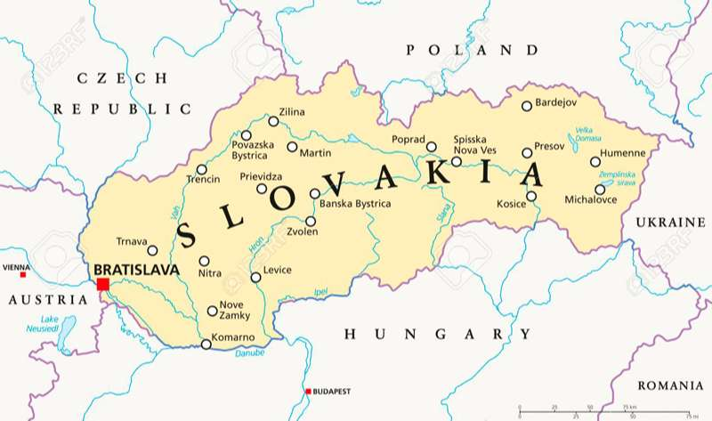
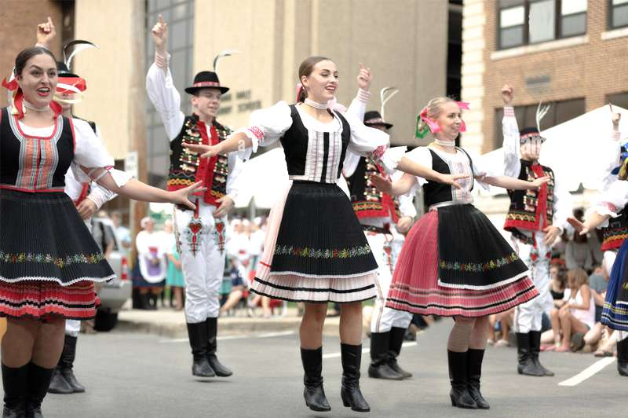
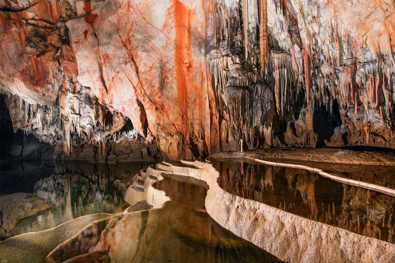
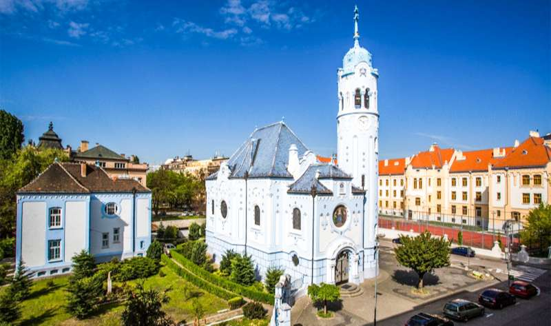
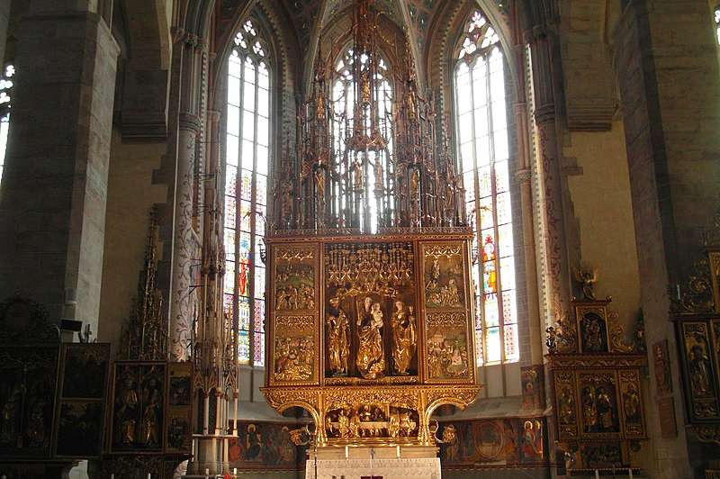
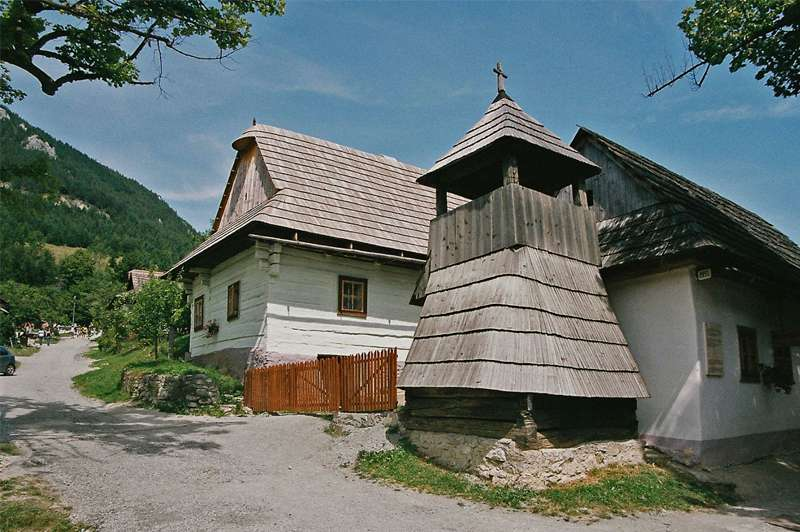

23/04/2022 2290
So với các nước láng giềng Hungary và Ba Lan về mặt địa giới lẫn văn hóa, Slovakia bị che khuất trước Áo và Cộng hòa Séc. Slovakia tồn tại như một trong những viên ngọc bí ẩn lớn nhất của Trung Âu.
Với diện tích là 49.036 km2 dân số chỉ 5,5 triệu người, đất nước này rất dễ bị bỏ qua. Tuy nhiên, lịch sử của nó vẫn vô cùng hào hùng như bất cứ nơi nào trên Thế giới. Nền văn hóa truyền thống dân gian đã được bảo tồn gìn giữ cho đến tận bây giờ. Từ kiến trúc dân gian đến múa dân gian, những văn hóa truyền thống này có thể được nhìn thấy trên khắp đất nước.

Bản đồ Slovakia
Cảnh quan của Slovakia cũng đa dạng như lịch sử văn hóa của nó. Từ những ngọn núi cao chót vót ở vùng lãnh thổ cực Bắc đến những vùng đồng bằng có rừng cây tươi tốt ở phía Nam, bất kỳ ai có hứng thú dành thời gian hòa mình với thiên nhiên sẽ khám phá ra khung cảnh tuyệt vời trên khắp đất nước Slovakia.
Chúng ta có thể khám phá các địa điểm được xây dựng từ thời trung cổ của Bratislava hoặc tìm đến các khu nghỉ mát trượt tuyết nép mình trong dãy Tatras, khám phá Slovakia có thể là một hành trình đáng kinh ngạc.
Slovakia là một quốc gia độc lập
Từ năm 1993, đất nước Tiệp Khắc chia thành hai quốc gia này là Cộng hòa Séc và Slovakia.
Sự phân chia tự quyết định này được gọi là “ Cuộc ly hôn nhung “, nó ám chỉ đến cuộc cánh mạng Velvet, giống như cuộc ly hôn trên cơ sở thương lượng một cách hòa bình.
Các quốc gia châu Âu mới hơn duy nhất là Montenegro và Serbia bị chia cắt vào năm 2006 và Kosovo tuyên bố độc lập vào năm 2008. Ngoài châu Âu, Eritrea, Palau, Nam Sudan và Timor-Leste trẻ hơn Slovakia.
Slovakia có mật độ lâu đài cao nhất ở bất kỳ đâu
Lâu đài Bojnice
Mặc dù bản chất là một đất nước non trẻ nhưng Slovakia có một lịch sử lâu đời kéo dài từ quá khứ. Du khách đến thăm Slovakia sẽ khám phá 180 lâu đài lớn và 425 lâu đài nằm rải rác trên diện tích 49.000 km² của đất nước.
Hàng năm, hàng ngàn du khách được thu hút đến các lâu đài nổi tiếng ở thủ đô Bratislava của thành phố, cũng như Bojnice và Orava.
.jpg)
Lâu đài Spiš
Có lẽ di tích thời trung cổ ấn tượng nhất của Slovakia là lâu đài ở Spiš, một trong những Di sản Văn hóa và Thiên nhiên Thế giới được UNESCO công nhận.
Có một nền văn hóa hấp dẫn của khiêu vũ dân gian
Mỗi khu vực của Slovakia có lịch sử múa dân gian riêng và có hơn 100 đội múa dân gian ở Slovakia.
Những điệu múa dân gian nhanh và dữ dội này được đi kèm với âm nhạc Violin, Bass và Cymbalo. Các vũ công mặc những bộ trang phục dân gian truyền thống tuyệt đẹp, đầy màu sắc.

Điệu múa với trang phục truyền thống
Có rất nhiều điệu nhảy được đặt tên theo một số truyền thống nhất định. Bạn có thể xem điệu múa Poppy Seed, điệu múa Hat, điệu múa Pawn và nhiều điệu nhảy khác.
Tỷ lệ sinh ở người Slovakia thấp đến mức khó tin
Ở Slovakia, trung bình một phụ nữ dự kiến sẽ có 1,5 con trong khi mức trung bình toàn cầu là 1,6. Tỷ lệ sinh này là tương đối thấp khi so sánh ngay cả với Tây Âu - chẳng hạn như Vương quốc Anh là 1,8. Trong khi đó ở một số vùng của châu Phi, trung bình một phụ nữ có 7 con. Có thể điều này là do những người phụ nữ quá bận rộn với việc nhảy múa.
Cảnh quan của Slovakia được thống trị bởi các ngọn núi
Phần lớn đất nước Slovakia nằm ở độ cao hơn 800m (2600ft) và đất nước khiêm tốn này sở hữu viên ngọc quý của dãy Carpathians, dãy núi Tatras.

Popradské pleso, Vysoké Tatry
Tatras tạo thành biên giới ở phía bắc Slovakia với Ba Lan, đỉnh cao nhất của dãy Tatras là tháp Gerlachovský štít ở độ cao 2655m. Từ đỉnh tháp có thể ngắm nhìn ra khắp trung tâm Châu Âu. Ở đây bạn có thể đi bộ để khám phá hàng trăm hồ Alpine và thác nước tuyệt đẹp.
Những ngọn núi lớn phủ đầy tuyết
Slovakia là một điểm đến ngày càng thu hút của người dân châu Âu đối với các khu nghỉ dưỡng trượt tuyết giá rẻ, chắc chắn rẻ hơn so với các nước tương đương như Thụy Sĩ trên dãy Alps.
The Guardian báo cáo rằng thị trấn nghỉ mát Jasná, được tìm thấy ở hạ lưu Tatras, cung cấp dịch vụ trượt tuyết đẳng cấp thế giới với ngân sách eo hẹp nhất .
Tatras
Mùa trượt tuyết chính ở Slovakia kéo dài từ tháng 12 đến tháng 3 và Jasná chỉ cách Bratislava 3 giờ.
Một mê cung của những hang động
Phong cảnh ấn tượng của Slovakia không chỉ giới hạn ở những ngọn núi lớn. Trên thực tế, nếu bạn đi sâu vào bên dưới những địa hình đồi núi thì bạn có thể sẽ ngạc nhiên với hệ thống hang động nơi đây
Slovakia sở hữu hơn 6000 hang động (được phát hiện cho đến nay). Mỗi công viên quốc gia ở Slovakia đều là nơi lưu giữ những hang động kỳ thú, có những lối đi như mê cung và những tảng đá khổng lồ.

Hang động Krasnohorska
Hang động Krasnohorska ở miền nam Slovakia sở hữu nhũ đá lớn nhất thế giới cao 32,6m, đạt kỷ lục Guinness thế giới.
Slovakia có khu bảo tồn kiến trúc dân gian đầu tiên trên thế giới
Ngôi làng Čičmany nhỏ bé, nép mình trong vùng núi phía Bắc Slovakia, đã tạo nên khu bảo tồn kiến trúc dân gian đầu tiên trên thế giới.

Ngôi làng Čičmany
“Những ngôi nhà sơn màu của ngôi làng được làm bằng gỗ đen, nó được trang trí theo nhiều phong cách dân gian với các bức tranh minh họa màu trắng tạo nên một khung cảnh bên ngoài đẹp như tranh vẽ và rất lãng mạn. Các hoa văn đường viền này đã được tạo ra trên các ngôi nhà hơn 200 năm, một truyền thống dân gian lâu đời được lưu giữ cho đến ngày nay. ”
Biên giới Bratislava
Thủ đô Bratislava của Slovakia là thành phố thủ đô duy nhất trên thế giới có biên giới với 2 quốc gia. Bạn có thể thực hiện một chuyến đi trong ngày đến Hungary ở phía nam và Áo ở phía Tây từ thành phố thủ đô xinh đẹp nằm trên sông Danube, một con sông chính của Trung Âu.
Sông Danube
Thật vậy, một chuyến đi thuyền 90 phút ngược dòng sông này sẽ dẫn đến thành phố Vienna của Áo.
Vẻ đẹp Bratislava
Bên cạnh những người hàng xóm thú vị, thành phố Bratislava tự nó là một thủ đô xinh đẹp và quyến rũ của Trung Âu.
Bị che khuất như một điểm đến bởi thủ đô Praha của Séc , Bratislava trên thực tế là một thành phố đáng yêu nằm ở hai bên sông Danube. Khu phố cổ lịch sử của nó hoàn toàn dành cho người đi bộ và du khách có thể thưởng ngoạn vẻ đẹp của Bratislava khi đi dạo quanh thành phố.
Bratislava về đêm
Vào ban đêm, khu phố cổ biến thành một lãnh địa quán bar nhộn nhịp với cuộc sống về đêm thú vị, khiến Bratislava trở thành một điểm đến giải trí và thú vị cho bất kỳ du khách nào.
Thiên nhiên ngay trên bậc cửa
Ngoài khu phố cổ lịch sử của Bratislava và cuộc sống về đêm tràn đầy năng lượng, nơi đây còn có thiên nhiên ngay trước cửa nhà dưới dạng rừng Bratislava.
.jpg)
Rừng Bratislava
Với diện tích khoảng 16 km2 bao gồm những con đường mòn dài đi bộ, rừng Bratislava mang đến cho bạn một lối thoát dễ dàng khỏi cuộc sống thành phố, nơi bạn sẽ thấy mình tràn đầy sinh lực bởi không khí thiên nhiên trong lành.
Khi bạn đã đi hết những con đường mòn trong rừng trên mặt đất, bạn có thể đi đến những hàng cây - một lối đi dây được xâu lại từ các cành cây tạo ra một mạng lưới đường đi thú vị trên cao.
Văn hóa ở Kosice
Ngoài Bratislava, thành phố Kosice thứ hai của Slovakia là một trung tâm văn hóa khác. Vào năm 2013, Kosice đã giành được danh hiệu Thủ đô Văn hóa Châu Âu và thành phố này đã giữ nguyên nguồn gốc văn hóa của mình kể từ đó.

Nhà thờ St Elizabeth
Muzeum Vojtecha Lofflera rộng lớn cung cấp một loạt các tác phẩm hội họa và điêu khắc. Ở đây nổi tiếng nhất là nhà thờ St Elizabeth được xây dựng vào thế kỷ 14 với kiến trúc Gothic tuyệt đẹp, được bảo tồn và gìn giữ cho đến ngày nay.
Văn hóa uống rượu
Người Slovakia rất thích và biết thưởng thức đồ uống có cồn. Theo dữ liệu do Tổ chức Y tế Thế giới công bố, Slovakia nằm trong 10 quốc gia hàng đầu thế giới về tiêu thụ rượu, với trung bình một người trưởng thành tiêu thụ khoảng 13 lít rượu nguyên chất mỗi năm. Bạn sẽ thấy ở Bratislava rải rác với các quán rượu và nhà máy bia đặc trưng tại đây

Rượu Gin
Borovička là tên của thức uống quốc gia của Slovakia, một loại rượu có hương vị từ cây bách xù và một thứ gì đó tương tự như rượu Gin.
Đi tàu miễn phí
Vào năm 2014, cơ quan lập pháp Slovakia đã đồng ý cung cấp việc đi lại bằng tàu hỏa miễn phí cho tất cả trẻ em, người già trên 62 tuổi cũng như sinh viên toàn thời gian dưới 26 tuổi.
Thỏa thuận này không chỉ dành cho công dân Slovakia - bất kỳ thường trú nhân nào của một quốc gia trong Liên minh Châu Âu đều có thể tận dụng lợi thế, chỉ cần đăng ký để nhận thẻ du lịch.

Đường sắt ở Slovakia
Hầu hết các thị trấn ở Slovakia đều có ga đường sắt, vì vậy nếu bạn đủ may mắn nằm trong danh mục cho phép bạn đi tàu miễn phí, thì đó như là một món quà mà Slovakia tặng cho bạn để khám phá đất nước của họ.
Hàng ngàn suối khoáng
Có hơn 1300 suối khoáng trên khắp Slovakia, và hầu hết đang được sử dụng cho mục đích giải trí hoặc trị liệu.
Suối nước nóng được coi là một phần của cuộc sống hàng ngày ở Slovakia, vì vậy các Spa rất dễ tiếp cận và giá cả phải chăng. Nó không được coi là điều xa xỉ hiếm có mà là yếu tố thiết yếu của cuộc sống.
Suối nước nóng
Thị trấn Spa Piešťany có một bảo tàng Spa, nơi có thể khám phá những lợi ích sức khỏe của việc tắm nước nóng thiên nhiên. Tắm nước nóng được cho là để cải thiện tuần hoàn, giải phóng căng thẳng và làm cho giấc ngủ ngon hơn. Đến với Slovaki thì suối nước nóng của Slovakia là không thể bỏ qua.
Bàn thờ bằng gỗ cao nhất thế giới
Thị trấn thời trung cổ Levoča có một địa điểm nổi tiếng khác thường, là nơi có bàn thờ bằng gỗ cao nhất thế giới.

Bàn thờ bằng gỗ cao nhất thế giới
“Bàn thờ khổng lồ này được chế tác bởi một bậc thầy tên là Paul và có chiều cao 18,6m, chiều ngang 6m. Bàn thờ khổng lồ có từ thế kỷ 16 và là một kiệt tác đồ gỗ Gothic nổi tiếng thế giới. Đó là những chạm khắc phức tạp, mạ vàng công phu và là một điều kỳ diệu đáng để chiêm ngưỡng. "
Món ăn dân tộc là bánh bryndzové halušky
Món ăn quốc gia ở Slovakia được gọi là "bryndzové halušky" , nó đặc trưng bởi bánh bao khoai tây được phủ trong một loại pho mát dê thơm nhẹ được gọi là "bryndza."

Bryndzové halušky
Loại pho mát cay nồng này được yêu thích trên khắp đất nước Slovakia, đến nỗi thành phố Turecko tổ chức lễ hội hàng năm mang tên món ăn này và thậm chí còn tổ chức cuộc thi ăn uống.
Slovakia có một trong những thị trấn đẹp nhất châu Âu
Làng Vlkolinec được thành lập như một Trung tâm Di sản Thế giới của UNESCO vào năm 1993 nhờ các công trình kiến trúc được bảo tồn tốt.
Hiện đây là một trong 10 ngôi làng của Slovakia đã được chỉ định là một khu bảo tồn kiến trúc dân gian và đã được vinh danh là một trong những thị trấn đẹp nhất để tham quan ở châu Âu.

Làng Vlkolinec
Những ngôi nhà gỗ truyền thống có thể được nhìn thấy được sơn một cách thú vị, một số ngôi nhà mở cửa để du khách có thể khám phá. Với nội thất được giữ nguyên vẹn trong nhiều thập kỷ để tưởng nhớ về di sản văn hóa của người Slovakia.
Đừng nhầm lẫn với Slovenia
Mặc dù không chia sẻ bất kỳ biên giới nào với Quốc gia châu Âu được tìm thấy 100 dặm về phía đông nam, Slovakia vẫn thường bị nhầm lẫn với Slovenia.
Cả hai quốc gia đều có biên giới với Áo và Hungary, nhưng những điểm tương đồng kết thúc ở đó. Khi Tổng thống Bush tuyên bố vào năm 1999 rằng tất cả những gì ông biết là có một đất nước tên Slovakia nhưng ông thực sự không biết gì về Slovakia cả.
Slovania
Chà, sau khi đọc danh sách này, bạn có thể an tâm nói rằng bạn đã có được thông tin tốt hơn so với cựu tổng thống George W. Bush từng có.
Di sản văn hóa đa dạng của Slovakia kết hợp với cảnh quan hoang sơ và tuyệt vời khiến nó trở thành một điểm đến châu Âu sôi động đáng ngạc nhiên.
Cho dù bạn muốn trượt tuyết trên những con dốc dựng đứng của High Tatras, đi bộ trên những con đường mòn trong rừng Bratislavan hay chỉ đơn giản là nếm thử rượu bryndzové halušky trên đường phố Bratislavan - Slovakia sẽ là nơi nắm giữ tất cả những thứ đó cho bạn.
Đất nước thú vị này chỉ đang chờ được khám phá.
► Tổng hợp các đơn hàng XKLĐ Nhật Bản
► Tổng hợp các đơn hàng XKLĐ Đài Loan
► Tổng hợp các đơn hàng XKLĐ Châu Âu